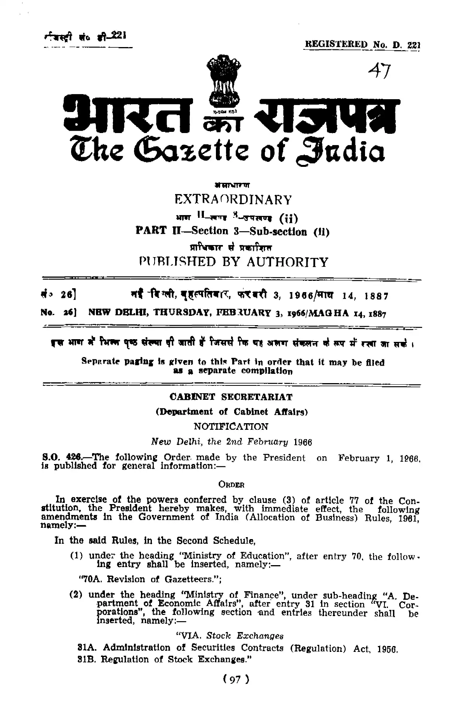
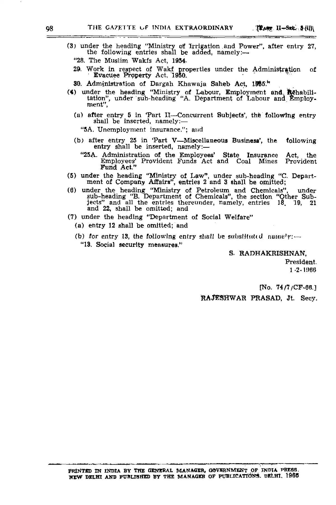

Amendment #47 (S.O. 426, 1966)
9 changes: 0 to the First Schedule, 9 to the Second Schedule. 5 applied4 not applied
The order, page by page
Page 1 of 2

12after Schedule 2 › Ministry of Education › entry 70
- 70A. Revision of Gazetteers.
applied at schedule 2 › ministry MINISTRY OF EDUCATION › ministry MINISTRY OF EDUCATION › entry 70A in the Rules after #47
after Schedule 2 › Ministry of Finance › Department of Economic Affairs › VI. Corporations › entry 31
- VIA. Stock Exchanges
- 31A. Administration of Securitles Contracts (Regulation) Act, 1956.
- 81B. Regulation of Stock Exchanges.
not applied (the change could not be placed in the Rules as read; see How this document was read)
Page 2 of 2

3456789after Schedule 2 › Ministry of Irrigation and Power › entry 27
- 28. The Muslim Wakfs Act, 1954.
- 29. Work in respect of Wakf properties under the Administration of Evacuee Property Act, 1950.
- 30. Administration of Dargah Khawaja Saheb Act, 1955.
applied at schedule 2 › ministry MINISTRY OF IRRIGATION AND POWER. › entry 28 in the Rules after #47
after Schedule 2 › Ministry of Labour, Employment and, Rehabilitation › Department of Labour and Employment › Part II-Concurrent Subjects › entry 5
- 5A. Unemployment insurance.
not applied (the change could not be placed in the Rules as read; see How this document was read)
after Schedule 2 › Ministry of Labour, Employment and, Rehabilitation › Department of Labour and Employment › Part V-Miscellaneous Business › entry 25
- 25A. Administration of the Employees' State Insurance Act, the Employees' Provident Funds Act and Coal Mines Provident Fund Act.
not applied (the change could not be placed in the Rules as read; see How this document was read)
Schedule 2 › Ministry of Law › Department of Company Affairs › entry 2; Schedule 2 › Ministry of Law › Department of Company Affairs › entry 3
applied at schedule 2 › ministry MINISTRY OF LAW. › department C › entry 2 in the Rules after #47
Schedule 2 › Ministry of Petroleum and Chemicals › Department of Chemicals › Other Subjects; Schedule 2 › Ministry of Petroleum and Chemicals › Department of Chemicals › Other Subjects › entry 18; Schedule 2 › Ministry of Petroleum and Chemicals › Department of Chemicals › Other Subjects › entry 10; Schedule 2 › Ministry of Petroleum and Chemicals › Department of Chemicals › Other Subjects › entry 21; Schedule 2 › Ministry of Petroleum and Chemicals › Department of Chemicals › Other Subjects › entry 22
not applied (the change could not be placed in the Rules as read; see How this document was read)
Schedule 2 › Department of Social Welfare › entry 12
applied at schedule 2 › department Department of Social Welfare › entry 12 in the Rules after #47
Schedule 2 › Department of Social Welfare › entry 13
- 13. Social security measures.
applied at schedule 2 › department Department of Social Welfare › entry 13 in the Rules after #47
How this document was read
Known issues
| Change | Issue | Known as |
|---|---|---|
| 2 | change 2: no entry 31 under schedule 2 › ministry MINISTRY OF FINANCE › department A › group_heading IX | Entries not in the state |
| 4 | change 4: no department Department of Labour and Employment under schedule 2 › ministry Ministry of Labour, Employment & Rehabilitation | A unit cited by a name the Second Schedule does not have |
| 5 | change 5: no department Department of Labour and Employment under schedule 2 › ministry Ministry of Labour, Employment & Rehabilitation | A unit cited by a name the Second Schedule does not have |
| 7 | change 7: no group_heading Other Subjects under schedule 2 › ministry MINISTRY OF PETROLEUM & CHEMICALS › department B | Group headings |
From the Government of India (Allocation of Business) Rules, 1961 and their amendments, as published by the Cabinet Secretariat (cabsec.gov.in), read by orgpedia. The readings of the older scanned gazettes have known gaps.